Something broken? Click your problem below. Learning Twine? Go step by step: start at Step 1, then click Next at the bottom of each page. Still stuck? Send me a Mio.
Does my idea count as a game that "makes an argument"?
You've got an idea, and your pitch asks what argument your game makes. You're not sure if "a game about social media" counts.
Use the essay test: if your game could be rewritten as a short essay and lose nothing, the game isn't doing the work.
The argument has to live in the systems: win/loss conditions, numbers going up and down, choices that get locked out, things that get punished or rewarded. This is procedural rhetoric.
✗ Topic, not an argument
"A game about social media."
✓ An argument the systems make
"Every post raises your $followers but lowers your $sleep, and you can't win without burning out."
A quick check: can you say your argument in one sentence, and point to the variable that makes it?
I have no idea what to make. Where do I start?
You're staring at a blank page, and "make a game that argues something" isn't helping.
Pick a shape below. Use one, combine two, or ignore them all.
Shape
The idea
Gamification (a good place to start)
Scores, streaks, ratings, and rewards creeping into non-game parts of life. It's what the second half of the course is about, and it's easy to build systems around. Most of the shapes below can be pointed at it.
Score-world
Your prospects (jobs, housing, relationships, freedom) depend on a score in an app. Nosedive and social credit are reference points; credit scores, Uber ratings, and GPAs are the everyday versions.
The optimizer
You're trying to maximize a metric (steps, productivity, engagement, grades, followers), and the game makes you feel what that does to everything else.
The rigged system
Looks fair on the surface, but variables under the hood are stacked against the player. Good for structural inequality, algorithmic bias, "meritocracy".
The bureaucratic maze
Navigating a system (healthcare, financial aid, a help desk) where the rules themselves are the antagonist. Papers, Please is the reference point.
The impossible job
A role that can't actually be done well (content moderator, caregiver, teacher under impossible constraints), and the systems make the impossibility visible.
The Chamber of Choices
Choices appear, disappear, or grey out based on stats, background, or earlier decisions. Crossed-out options can make an argument about what's available to whom.
The unreliable narrator
The text says one thing, the variables track another, and the gap is the point. Good for propaganda, self-deception, corporate euphemism.
Story mode
Branching narrative where choice and writing carry most of the weight. Fine, but the systems still have to do some arguing, not just gate scenes.
Inventory as identity
What you pick up, keep, or lose changes who you are and what options you see. Class, consumption, memory.
The countdown
Something is decreasing (time, money, health, hope, attention) and every choice spends it. Scarcity and what people are forced to trade away.
Weird / poetic / abstract
Not every Twine game needs to be narrative or "gamey". Some of the best are closer to poems or mood pieces. Legitimate, if you have an argument that wants to be felt more than played.
Doing something more "gamey" than narrative (a puzzle, a character generator)? You can trade more systems for less text. Flag it at your pitch meeting.
Should we start building in Twine right away?
Your group has an idea, and everyone wants to open Twine and start typing.
Sketch it on paper first. It's much faster, and you won't get stuck on code before the design is settled.
Draw a box for each passage (each "page" of your game), with a few words about what happens.
Draw arrows for the choices between them.
Next to each box, write which variables change there (+1 money, -2 energy).
Take a photo. It's handy later for your reflection.
Can I see some good Twine games for inspiration?
You want to see what's possible before you commit to an idea.
Download and open in Twine to see how they're made, or as a starting point.
Getting started
Before you start: how do I make sure I never lose my game?
Every semester, someone opens Twine the week it's due and their game is gone. Twine doesn't save a file anywhere you'd expect, so if you don't make your own copies, one cleared browser or one different computer is all it takes.
At the end of every work session: Build → Publish to File, and save the file with the date in its name.
Open your story and click Build at the top, then Publish to File.
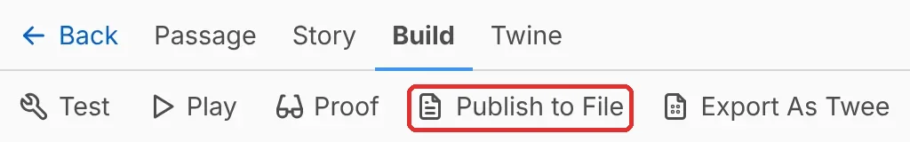
Rename the file it downloads with today's date: shift-2026-11-20.html. A new file every time, so you can always go back to yesterday's version if you break something.
Put it somewhere that isn't just this computer: Google Drive, OneDrive, or email it to yourself.
That same file is also what you submit, so you're not doing extra work.
Why this matters: Twine keeps your game inside the program (or inside your browser, if you use Twine on the website). So:
Clear your browser history or cache, and your game is gone.
Switch browsers or computers (a lab computer, your laptop), and your game is not there.
Work in an incognito/private window, and your game disappears when you close it.
The Twine app and Twine in a browser don't share: a game made in the lab's browser isn't in the app on your laptop.
You missed the Twine play journals (or don't remember them), and you need to get going.
Use Twine in Chrome, then follow these pages in order with the Next button.
Go to twinery.org. Download the app (free, Mac or PC), or click Use it online to work in your browser.
Use Chrome. Twine works best there. Safari and Firefox can act up.
Don't use your phone. Building on a phone doesn't really work, and playing on a phone is hit or miss. Use a computer, and test your finished game on a computer.
Why doesn't the code I found online work in my game?
You found a tutorial, a forum answer, or a Reddit post with exactly what you need. You paste it in, and Twine shows an error, or nothing happens.
It's almost certainly written for a different "story format". We use Harlowe. Code written for other formats will break your game, which is why you shouldn't copy code from random places.
Twine has several story formats, which are basically different coding languages: Harlowe, SugarCube, Snowman, and Chapbook. They look similar and are completely incompatible.
✗ SugarCube (double angle brackets): breaks in our games
<<set $gold to 5>>
✓ Harlowe (round brackets and a colon)
(set: $gold to 5)
Before you use anything from outside this page, look for the word "Harlowe". If it isn't there, assume it's the wrong one, even if it looks close.
To check what your own story uses: open your story, click Story at the top, then Details.
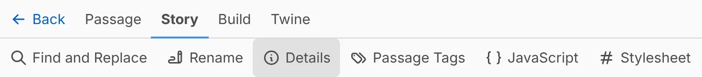
Story tab → Details.Story Format should say Harlowe 3.something. This panel also counts your words, passages, and broken links: handy for checking the project requirements.
How do I open my saved game again (or open the example game)?
You're on a different computer, or you want to keep working on yesterday's file, or you want to look inside the example project.
On the Twine home screen: Library → Import, then pick the .html file.
Library → Import. Then click the story card and Edit.
Double-clicking the .html file on your computer will play the game in your browser. To edit it, you have to import it.
Careful: importing can replace your game
If Twine already has a story with the same name, importing replaces it completely. If the file you're importing is older, your newer work is gone. Watch for this line:
If you see this line, stop and check which version is newer.
Not sure? Rename the story already in Twine first (click its card, then Rename), then import. You'll have both.
Working together
How do we split the work as a group?
You're in a group and wondering who does what, and how everyone's work ends up in one game.
Pick one of these methods (or mix them). Decide together at the start.
🗺️Method 1: Plan together, one person builds
Everyone does the thinking and writing together (brainstorming, paper prototype, writing passages). One person types it all into Twine.
Good for: groups where one person is comfortable with Twine.
🎭Method 2: Split by role
One person builds in Twine, one makes or finds images and sound, one writes the reflection, one does research and writing.
Good for: groups with different strengths.
🔁Method 3: Take turns with the file
Everyone builds, one at a time, passing the game along.
When you're done, Build → Publish to File, and name it with the date.
Send the file to the next person (group chat, Drive, email), and say "you have it now."
They open it with Library → Import.
Good for: groups who all want to build. Make sure you're always working on the newest file (why).
📄Method 4: Everyone writes in a Google Doc, then import it
Everyone writes passages in one shared Google Doc, at the same time. Then one person brings it into Twine in one go.
How do we write the game in a Google Doc and bring it into Twine?
Your group wants to write at the same time, in one place, without passing a file around.
Write the passages in a shared Google Doc using a simple format called Twee, then import it into Twine.
In Twee, each passage starts with two colons and its name. Everything under it is the passage: text, links, and code.
Your shared Google Doc
:: StoryTitle
Our Game
:: Start
Your shift starts at 6:00.
[[Clock in->Locker Room]]
:: Locker Room
Your badge is in the locker.
Everyone: turn off smart quotes first. In Google Docs: Tools → Preferences, uncheck Use smart quotes. Otherwise your code breaks (why).
Write your passages in the Doc, in the format above. Tags go in square brackets after the name: :: StatusBar [footer].
When you're ready, one person copies all the text and pastes it into a plain text editor: Notepad (Windows) or TextEdit (Mac: then Format → Make Plain Text).
Save it as our-game.twee. In Notepad, set "Save as type" to All files, or it becomes our-game.twee.txt and Twine won't take it.
In Twine: Library → Import, and pick the .twee file.
Your game appears in the Library. Click it, then Edit.
Your passages and links are all there. Drag them into a tidy layout, then add images and test.
Going the other way:Build → Export As Twee turns your Twine game back into text, so you can paste the current version into the Doc for everyone to read.
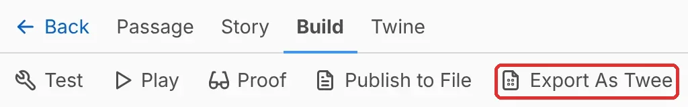
Importing the Doc a second time will replace the game in Twine with the same name, including anything you added in Twine since. If you need to bring in more passages later, give the new import a different StoryTitle (more).
Writing & code
How do I make passages and choices?
You've opened Twine and want the player to be able to choose something. In Twine, every "page" of your game is a passage, and every choice is a link from one passage to another.
Type [[Get up]] in a passage, and Twine makes a choice and the passage it leads to.
On the Twine home screen, click Story → + New, type a name, and click Create.
You'll see one passage with a green rocket next to it. The rocket marks where your game starts. Double-click the passage to open it.
Write some text. Then, on its own line, type a choice in double square brackets:
Twine creates the new passages for you, with arrows showing where each choice goes:
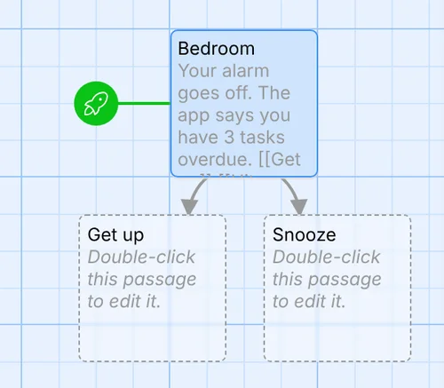
Double-click each new passage and write what happens there.
Click Build → Play to try it. The player sees your choices as links:
Two kinds of link:
[[Get up]]
[[Hit snooze->Snooze]]
[[Get up]]: the player sees "Get up", and it goes to a passage called Get up.
[[Hit snooze->Snooze]]: the player sees "Hit snooze" (before the arrow), and it goes to the passage called Snooze (after the arrow). Use this when you want the choice text to be different from the passage name.
Watch your spelling
The passage name has to match exactly, capitals included. [[get up]] with a small "g" makes a second, empty passage called "get up", and players who click it hit a dead end. If you see a passage you didn't mean to make, fix the spelling in the link and delete the extra passage. Story → Details shows your broken links.
What are "macros" and "hooks"?
The project requirements ask for a minimum number of macros and hooks, and you're not sure what those words mean (or if you have any).
A macro is a command in round brackets with a colon, like (set:). A hook is text in square brackets attached right after a macro, like [You're in.].
(if: $hasBadge is true)↑ macro[The scanner beeps green.]↑ hook
Spot a macro: round brackets, a word, a colon. (set: … ), (if: … ), (link: … ). Macros do things: change a variable, check a variable, make a link, pick a random number, change a colour.
Spot a hook: square brackets [ ] stuck right after a macro, with no space. The hook is the text (or code) the macro acts on: the text that shows if the (if:) is true, the text that turns red, the code that runs when a (link:) is clicked.
Don't confuse hooks with links.[[Get up]] (double brackets) is a link, not a hook.
The macros you'll use most (each has its own page):
Macro
What it does
Example
(set:)
Puts a value in a variable
(set: $energy to 10)
(if:) / (else:) / (else-if:)
Shows a hook only if something is true
(if: $energy < 3)[You're exhausted.]
(link:)
A link that runs code when clicked
(link: "Take it")[(set: $hasBadge to true)]
(goto:)
Sends the player to a passage
(goto: "Floor")
(random:)
Picks a random number
(random: 1, 6)
(text-colour:)
Colours the text in its hook
(text-colour: red)[Warning]
Not sure how something counts toward the requirements? Ask me before you submit. Full list of macros: the sidebar of the Harlowe manual.
What's a variable? (and the 3 kinds you'll use)
Your game needs to remember something: how much energy the player has, whether they picked up the badge, their name. That's what a variable is: a named box that remembers one thing.
A variable's name starts with $. It can hold a number, true/false, or text.
Kind
Use it for
Example
Number
Anything you count or add up: money, energy, a rating, days left
(set: $energy to 10)
True / false
Yes-or-no things: has the badge, met the boss, got fired
(set: $hasBadge to false)
Text
Words: a name, a job title, a choice they made
(set: $name to "Sam")
Numbers and true/false have no quotes. Text has quotes.
Names: no spaces, don't start with a number, and capitals matter. Use camelCase: $hasBadge, $timesLate. (It's also more like camels.)
The lessons below build one small game, step by step, using all three kinds. Click Next to start.
Step by step: how do I create my variables and give them starting values?
You know what variables your game needs (energy, a rating, a badge, a name), and you need to create them with starting values. Where does that code go? If you put it in your first passage, testing from the middle of your game shows everything as 0, and if the player ever comes back to that passage, everything resets.
Put all of it in one passage with the tag startup. Twine runs it first, every time.
In your story, click + New (top left) to make a new passage.
Click Rename and call it Setup. It doesn't need any links, and players never see it.
Click + Tag, type startup (all lowercase, one word), and press Enter.
Type one (set:) line for each variable:
Passage: Setup (tag: startup)
(set: $energy to 10)
(set: $rating to 4.6)
(set: $hasBadge to false)
(set: $name to "Sam")
Your Setup passage: the startup tag (circled), and one line per variable.
That's it: your variables now exist from the very start of the game. Next, let's show them to the player.
Step by step: how do I show a variable to the player?
You've made your variables, and you want the player to see them: "Energy: 10", or their name in a sentence.
Just type the variable's name (with the $) in your passage text. Twine swaps in the value.
Open your first passage (the one with the green rocket).
Type your text, and put the variable wherever you want its value to appear:
Good morning, $name.
Energy: $energy
Rating: $rating
[[Go to the locker room->Locker Room]]
Click Build → Play. The player sees the values, not the names:
Seeing a 0 where your value should be? Check the spelling and capitals of the variable, and that your Setup passage has the startup tag.
Step by step: how do I change a variable when the player picks something?
The player can take the badge or leave it, and you want the game to remember which. You may have tried putting (set: $hasBadge to true) next to the "Take the badge" link... and now the player gets the badge no matter what they click.
✗ What people usually try first
(set: $hasBadge to true)
[[Take the badge->Scanner]]
[[Leave it->Scanner]]
A (set:) doesn't wait for a click. It runs the moment the passage appears, so the player has the badge before choosing anything.
Put the (set:) inside a (link:), so it only runs when that choice is clicked.
Instead of [[Take the badge]], type (link: "Take the badge"). The words in quotes are what the player clicks.
Right after it, with no space, open square brackets [ ]. Everything inside runs only when the player clicks.
Inside the brackets: first the change, (set: $hasBadge to true), then where to go next, (goto: "Scanner").
The other choice stays a normal link:
✓ Passage: Locker Room
Your badge is hanging in the locker.
(link: "Take the badge")[(set: $hasBadge to true)(goto: "Scanner")]
[[Leave it->Scanner]]
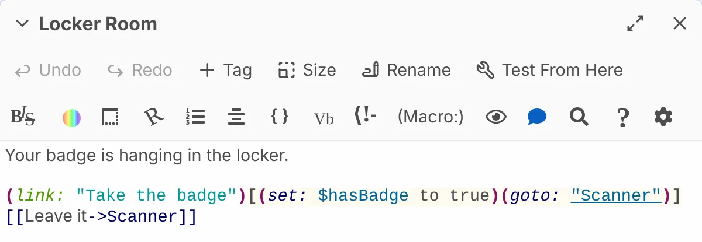
Changing other kinds of variables works the same way. Some examples to put inside the brackets:
(set: $energy to it - 2) <!-- number: subtract 2 -->
(set: $money to it + 50) <!-- number: add 50 -->
(set: $hasBadge to true) <!-- true/false: switch it -->
(set: $job to "manager") <!-- text: replace it -->
it means "the variable's current value", so it - 2 means "2 less than now".
Simpler alternative: give each choice its own passage ([[Take the badge->Badge Taken]]), and put the (set:) at the very top of that passage. It works because that passage only appears if the player chose it. Note: links made with (link:) don't draw an arrow on the story map, so the map can look disconnected even when the game works.
Step by step: how do I show different text depending on a variable? (if / else)
The player took the badge, or didn't. Now you want the next passage to react: the scanner beeps green if they have it, red if they don't.
Use (if:) with a hook for the "yes" text, then (else:) with a hook for the "no" text.
Type (if:, then the thing to check, then ): (if: $hasBadge is true).
Right after it, no space, put the text to show when it's true in square brackets: [The scanner beeps green. You're in.]
Right after that, type (else:) and, in brackets, the text to show otherwise: [The scanner beeps red.]
You can put code inside the hooks too. Here, the rating drops only in the "red" version:
Passage: Scanner
(if: $hasBadge is true)[The scanner beeps green. You're in.](else:)[The scanner beeps red. (set: $rating to it - 0.3)Your rating drops.]
Rating: $rating
[[Start your shift->Shift]]
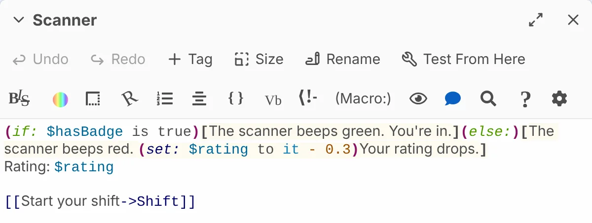
Play it twice, once taking the badge and once leaving it:
Took the badge.Left it: red, and the rating dropped.
Ways to check (put these inside the (if:)):
You want to check...
Write
is equal to
$hasBadge is true$name is "Sam"
is not equal to
$energy is not 0
more than / less than
$money > 100$energy < 3
at least / at most
$money >= 100$energy <= 3
two things at once
$hasBadge is true and $energy > 5
either one
$rating < 3 or $timesLate > 2
More than two options? Use (else-if:). Twine checks them in order and shows the first one that's true:
Step by step: how do I show or hide a choice depending on a variable?
Some choices should only be available sometimes: only players with a badge can go to the break room, only players with enough money can buy coffee. Or you want the player to see a choice they can't take.
Put the link inside an (if:) hook. Add spaces between the brackets to keep it readable.
Write the link like normal: [[Go to the break room->Break Room]].
Wrap it in an (if:) hook, with a space on each side so the brackets don't blur together:
(if: $hasBadge is true)[ [[Go to the break room->Break Room]] ]
Now players without the badge don't see the choice at all.
Want them to see what they're missing? Add an (else:) with the choice crossed out (~~ on each side) and a reason:
Passage: Shift
(if: $hasBadge is true)[ [[Go to the break room->Break Room]] ](else:)[~~Go to the break room~~ (you need a badge)]
[[Keep working->End]]
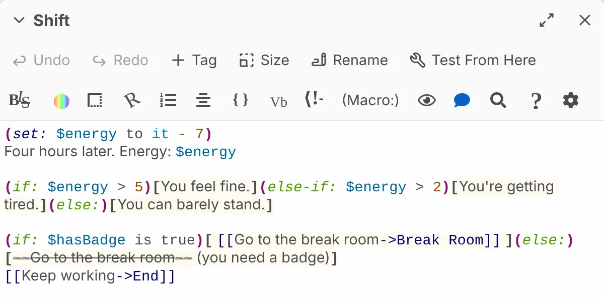
Play it both ways:
With the badge: the choice is a link.
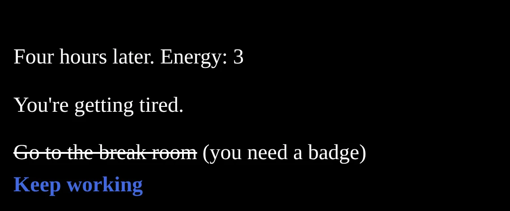
Without it: crossed out, not clickable.
A crossed-out choice can make an argument all by itself: it shows the player what's available to someone else.
My variable code doesn't work. What did I get wrong?
You wrote some variable code, and Twine shows an error, or it just doesn't do anything.
Check it against this list. These are the mistakes that break variables most often.
Use to when setting and is when checking. Not =.
✗ Doesn't work
(set: $energy = 10)
(if: $hasBadge = true)[...]
✓ Works
(set: $energy to 10)
(if: $hasBadge is true)[...]
Capitals matter: $Energy and $energy are two different boxes.
✗ Shows 0, because $Energy was never set
(set: $energy to 10)
You have $Energy energy left.
The hook goes right after the (if:), with no space.
✗ Doesn't work (space before the bracket)
(if: $hasBadge is true) [The scanner beeps green.]
✓ Works
(if: $hasBadge is true)[The scanner beeps green.]
For "not equal", use is not, not !=.
✗ Twine shows an error
(if: $energy != 0)[You can still work.]
✓ Works
(if: $energy is not 0)[You can still work.]
No quotes around true, false, or numbers. Quotes turn them into text.
✗ Never beeps green, and Twine doesn't warn you
(set: $hasBadge to "true")
(if: $hasBadge is true)[The scanner beeps green.]
✓ Works
(set: $hasBadge to true)
Curly quotes from Google Docs or PDFs break everything (fix). Code from other websites may be for a different format (why).
Variables showing 0 when you test? Fix. Number on screen not changing after a click? Fix.
How do I show the player's stats on every passage?
You want the player's energy (or money, or rating) to show at the bottom of every passage, like a health bar in a game. You don't want to paste it into 50 passages.
Make one passage with the tag footer. Twine adds it to the bottom of every passage for you.
Make a new passage. Call it anything (StatusBar is fine). It doesn't need any links.
Click + Tag, type footer, and save. (Use header to put it at the top instead.) Type it exactly, all lowercase: Footer won't work, and Twine won't tell you.
Write what you want shown:
Passage: StatusBar (tag: footer)
<hr>
Energy: $energy | Rating: $rating
The tag shows up under the toolbar.What the player sees, on every passage.
Tip
You can use (if:) in a footer too, like a warning that only appears when $energy is low.
What's the little arrow in the corner of my game, and should I hide it?
Play your game, and look at the top-left corner: from the second passage on, there's a small curved arrow. That's Harlowe's undo button, and players will see it on itch too. Click it and the game rewinds one step, as if the last choice never happened. Your variables rewind too: lost points come back, a bad rating disappears.
The curved arrow, top left.
For a lot of games, that's fine. But think about what your game argues. If it argues that you can't escape the rating, the debt, or the algorithm, a button that lets players escape any bad outcome works against you. Consequences only make a point if they stick.
To hide it, add one line to your Stylesheet.
Open your story, click Story at the top, then Stylesheet.
Paste this in:
tw-sidebar { display: none; }
Play the game again and check that the arrow is gone.
The browser's back button is different
The browser's own back button (or Alt + ←) doesn't go back one passage. It leaves the game and goes to whatever page you were on before. Warn your playtesters.
How do I add chance (dice rolls, random events)?
You want something to be up to luck: a 1-in-6 chance of finding money, a random event, a coin flip that decides if you get caught.
Use (random: 1, 6): it picks a whole number from 1 to 6.
(set: $roll to (random: 1, 6))
(if: $roll is 6)[You find a twenty on the ground.](else:)[Nothing. Just pavement.]
Step by step: how do I add an image I found online?
You found a picture online that you want in your game, or you uploaded one to a site like Imgur. You need to get it into Twine.
Copy the image's own address (its URL), and paste it into one line of code. Then test it on itch.
Use a computer, in Chrome. This is hard to do on a phone.
Click on the image so it opens big, by itself. (In Google Images, click the image, then click it again or click "Visit" to get to the actual picture.)
Right-click on the picture itself (on a Mac trackpad: click with two fingers). A menu pops up.
Click Copy image address. Not "Copy link address", not "Copy image", and not the address bar at the top.
Right-click on the picture, then Copy image address. (Firefox calls it Copy Image Link; Safari, Copy Image Address.)
Check what you copied. Paste it into a new browser tab and press Enter. You should see only the picture, on a plain background. If you see a whole website (menus, comments, other pictures), you copied the wrong thing: go back to step 2.
Check the address itself. Paste it somewhere you can read it and compare with this:
✓ Good image addresshttps://i.imgur.com/Ab12Cd3.pnghttps://upload.wikimedia.org/.../Office.jpg
Starts with https://
Ends with .png.jpg.jpeg.gif or .webp (sometimes followed by ? and more letters, which is fine)
✗ Not an image addresshttps://www.google.com/imgres?imgurl=...https://drive.google.com/file/d/.../viewhttps://www.pinterest.com/pin/12345/C:\Users\you\Downloads\office.jpg
A search result, a Drive or Pinterest page, or a file on your computer
Put it in your passage. Copy this line, and replace the capital letters with your address. Keep the quotes:
Play it (Build → Play). See the picture? Good. See a little broken-picture icon? Go here.
Test it for real once it's on itch, in an incognito window. Some websites block their pictures from showing on other sites, so an image can work in Twine and then break on itch.
Using images you found online is fine for this project: just list where you got them in your reflection's works cited.
Your picture is a file on your computer (not online)? Use Option 2.
How do I add images that are saved on my computer?
Your images are files on your computer: art you made, photos you took, things you downloaded. Twine can't see your computer, so linking to C:\Users\... only works for you.
Put your game and your images in one folder, zip it, and upload the zip to itch.
Make a new folder on your computer. Put all your images in it.
In Twine, use just the file name:
<img src="badge.png" width="300">
When you're done, Build → Publish to File, and save the .html into that same folder.
Rename the .html to index.html. itch needs this name to know which file starts the game.
Open the folder, select everything inside it, and zip it (Windows: right-click → Send to → Compressed (zipped) folder. Mac: right-click → Compress).
Left: open the zip and index.html is right there. Right: the game is buried inside another folder, which happens when you zip the folder itself instead of what's inside it. Open your zip to check before uploading.
Three things that break it
Capital letters. On itch, Badge.PNG and badge.png are different files. Use lowercase, no spaces, no accents: break-room.png, not Pause Café.PNG.
Wrong file name. The game must be called exactly index.html (not index.html.html).
Wrong kind of archive. itch takes .zip only. Not .rar, not .7z.
Normal, not broken
With this method, your images won't show when you test inside Twine. To check them, double-click the index.html in your folder, or test on itch.
You still submit the .html on Lea as usual. itch is where the images have to work.
My image is huge, tiny, or stretched. How do I fix the size?
Your image pushes all the text off the screen, or it's squished and warped.
Set only the width. The height adjusts itself and keeps the shape.
✓ Keeps its shape
<img src="badge.png" width="300">
✗ Warps if the numbers don't match the original shape
<img src="badge.png" width="300" height="300">
Play with the number until it looks right. A percentage also works (width="70%"). Starting with an image around 800 to 1200 pixels wide makes life easier than a giant photo. Want to make your own art? Try Piskel or Pixilart.
How do I put an image behind my text?
You want a background picture for your game (an office, a forest), maybe a different one in different parts of the game.
Paste a few lines into your story's Stylesheet. One for the whole game, one per tag for specific passages.
One background for the whole game
Open your story, click Story at the top, then Stylesheet.
Paste this in, and replace office.jpg with your image's file name or address (same rules as any image):
The main background, with the dark box behind the text.
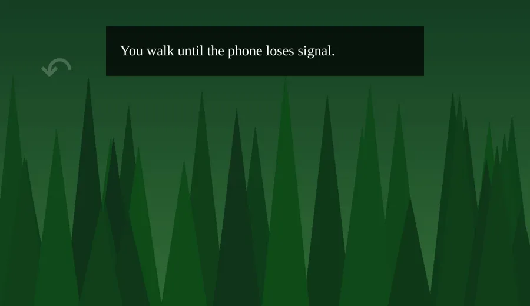
A passage tagged forest switches pictures.
Copy it exactly
CSS is fussy: every { needs a }, lines end with ;, and quotes must be straight (why).
How do I put one image on top of another?
You want a character standing in a room, or a badge that appears on the desk once the player picks it up.
Use this tool: type your file names, drag the top picture where you want it, and copy the code it gives you.
✋ Drag the top picture. (Until you paste full https:// addresses, the preview uses sample pictures.)
Your code: copy this into a passage, all on one line
The top image should be a PNG with a transparent background, or it'll sit there as a rectangle. (Piskel and Pixilart save transparent PNGs.)
Keep the code on one line, exactly as the tool gives it.
Using file names (not addresses)? Then this needs the zip method, like any image on your computer.
What it looks like in the game.
If you edit the code by hand: the (if:) has to go around the whole thing, like the tool does it. An (if:) placed inside the box makes the top image land below the picture instead of on it.
Can I add music or sound?
You want background music or sound effects, and Twine has no "add sound" button.
Use a small add-on, put the audio files in your game folder, and upload a zip.
The easiest route is Bitsy Audio (yes, it's a Bitsy tool; no, that's not a typo). For more control, the Harlowe Audio Library. Either way, your audio files go in the folder with your game, and you upload a zip, exactly like images on your computer.
Don't start music on the first passage
Browsers block sound until the player has clicked something. Put a "Start" link first, and start the music on the passage after it.
Please don't make it annoying. Players will mute you.
itch.io
How do I upload my game to itch.io?
Your game is ready to playtest (or submit), and you need a link people can click and play in their browser.
Make a free itch account, upload your .html (or .zip), and change four settings. Then test the link.
Make a free account at itch.io with an email you actually check.
Click the arrow next to your avatar (top right) → Upload new project.
Fill in a title and a short description. Nothing fancy.
Set Kind of project to HTML. This is the most important setting. If you leave it on "Downloadable", nobody can play in the browser.
Upload your file: the .html from Publish to File, or your .zip if you have images or sound in it.
When it finishes uploading, tick This file will be played in the browser.
Set the viewport size (1280 × 720 is a fine start). Under Frame options, tick Mobile friendly and Fullscreen button.
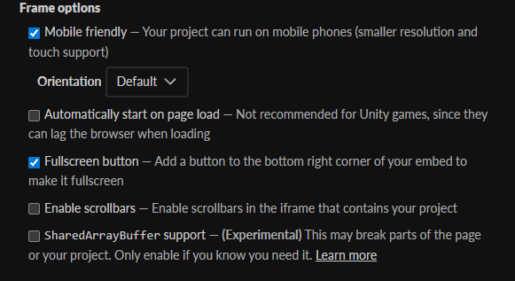
Scroll to the bottom, click Save & view page. Check that your game shows up.
Go back to the settings (click the DRAFT banner or Edit game at the top), scroll to the bottom, and under Visibility & access choose Public. Save again. (Public only appears after you've saved once.)
Copy your game page's address, open it in an incognito window, and play it. If it works there, it works for everyone.
Even with Mobile friendly ticked, phones are hit or miss. Test on a computer, and expect your reviewers to play on one.
Does my file have to be called index.html?
You're about to upload and wondering whether to rename your file.
Only if you're uploading a zip.
Uploading just the .html file: any name works (The Shift.html is fine).
Uploading a .zip (because of images or sound): the game inside must be called index.html.
I fixed something. How do I update my game on itch?
You already uploaded, then found a typo or a broken link. You want to put up the fixed version without changing your link.
Click Edit game, and upload the new file.
Delete the old file (otherwise the old one may be the one that plays).
Tick This file will be played in the browser on the new one.
Save, and test in incognito. Your link stays the same, so you don't need to resubmit it.
Submitting
How do I take a screenshot and put it in a PDF?
Your check-in (or reflection) needs screenshots of your game inside a PDF, and you've never taken a screenshot on purpose.
Take the screenshot with a keyboard shortcut, paste it into a Google Doc, and download the Doc as a PDF.
Open your game (or the Twine passage you want to show) on screen.
Take the screenshot:
Windows: press Windows + Shift + S together. The screen dims. Drag a box around what you want. It's now copied.
Mac: press Cmd + Shift + 4 together. Drag a box around what you want. It's saved on your Desktop.
Put it in your Google Doc: click where you want it and press Ctrl + V (Windows). On a Mac, drag the file from your Desktop into the Doc.
Make the PDF: in Google Docs, click File → Download → PDF Document (.pdf).
Open the PDF before you submit, and check the screenshots are really in it.
Did I do everything? (final checklist)
You think you're done, and want to make sure nothing slipped through. Due dates live on Lea and nowhere else.
Tick these off. (The boxes are just for you; nothing is saved or sent.)
Where can I find tutorials, documentation, and tools?
You want to go further than this page does: a video, the full manual, a tool for making art or adding sound.
Everything is below. Before you use any tutorial, check that it says "Harlowe" (why).
Did you tick This file will be played in the browser?
Did you upload the .html from Publish to File (or your .zip), not a .twee or a screenshot?
Why aren't my pictures showing up?
You added an image, and in the game there's a little broken-picture icon, or nothing at all.
Almost always: the address you used isn't the address of an image. It's the address of a web page that has an image on it.
Step 1: test your code with this image
Copy this line into a passage and play it. You should see a green check mark.
<img src="TEST-IMAGE-URL" width="300">
It shows up? Your code is fine, and the problem is your image's address (keep reading). It doesn't show up? Check your quotes and brackets against the line above.
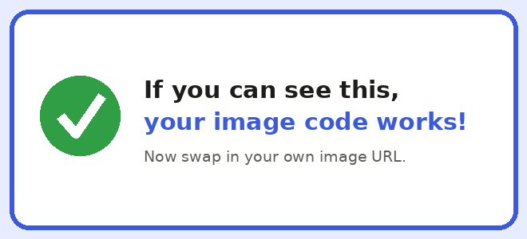
What you should see.
Step 2: test your image's address. Paste it into a new browser tab. If you see only the image on a plain background, it's right. If you see a whole website (menus, comments, a Google Drive viewer), it's wrong.
Two images in Twine......and in the game. The Google Drive link is a broken icon.
Addresses that won't work:
Google Drive, Google Photos, OneDrive share links. These are viewer pages, not images.
Google Image search results. Click through to the actual image, then Copy image address.
Sites that block their images from showing on other sites. Works on their site, breaks in your game.
Addresses starting with http:// (no "s"). itch only loads https://.
Files on your computer like C:\Users\.... Works only for you. Use the zip method.
I copied code and it doesn't work, even though it looks exactly right.
You copied code from a PDF, a Google Doc, or a Word file, pasted it into Twine, and got an error (or nothing happened).
My stats say 0 when I test, even though I set them.
You set $energy to 10 at the start of your game. Then you click Test From Here on a passage near the end, and your stats say Energy: 0.
Put your starting (set:) lines in a passage tagged startup (how). Then testing from anywhere works.
Tested from the middle: Energy 0, Rating 0.
Why: Test From Here starts the game right at that passage. It skips your first passage, so the lines that set your variables never ran. In Harlowe, a variable that was never set shows as 0. A startup passage always runs first, wherever you start.
I clicked, my variable changed, but the number on screen stayed the same.
Your passage shows Strength: 1, with a "Do squats" link that adds 1. The player clicks it, and the screen still says Strength: 1. Your code looks right. What happened?
The code
Strength: $strength
(link: "Do squats")[(set: $strength to it + 1)]
Before the click.
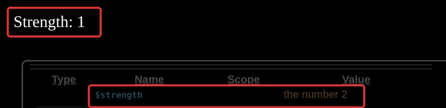
After the click: the screen still says 1, but Twine's test panel shows it's really 2.
Your code worked. The screen just doesn't update by itself.
Why: Twine writes a passage onto the screen once, when it appears. Think of it like a printed page: changing the variable afterwards doesn't reprint what's already on the page. (Stats bars work the same way: they update on the next passage.)
Fix 1: show the new number inside the link's brackets, so it appears after the click:
Strength: $strength
(link: "Do squats")[(set: $strength to it + 1)You feel stronger. Strength is now $strength.]
With Fix 1, after the click.
Fix 2: send the player to a new passage, where everything is written fresh:
(link: "Do squats")[(set: $strength to it + 1)(goto: "Gym Results")]
My music doesn't play.
You added music, and the game is silent.
Most likely the browser blocked it. Browsers don't allow sound until the player clicks something, so start your music after a click.
Make your first passage a title screen with a Start link.
Start the music on the passage that link goes to.
Still silent? Check that:
The audio file is in your zip, next to index.html (same as images).
The file name in your code matches exactly, capitals included.
If it's an address online, it starts with https://.
My game looks squished or cut off on itch.
Your game works on itch, but it's stuck in a small box, the bottom of the text is cut off, or players can't scroll.
On your itch Edit page, scroll to Embed options and change these:
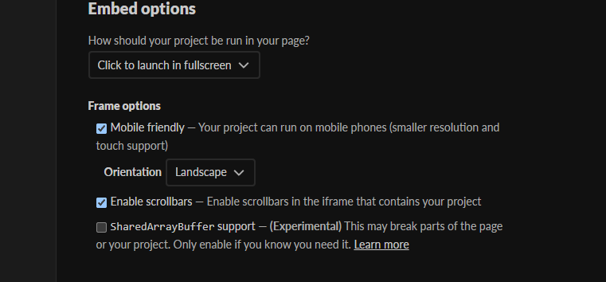
How should your project be run: choose Click to launch in fullscreen. Players click once, and your game fills the whole screen. This fixes most cramped games.
Enable scrollbars: tick it if long passages get cut off at the bottom.
Or, if you'd rather keep the game inside the page: make the viewport size bigger (try 1280 × 720 or more).
Save, then check it again in an incognito window.
Help, my game is gone!
You opened Twine and your story isn't there.
Don't panic yet. Check where you're working, then import your latest saved file.
Same computer and browser? Twine in a browser only keeps your game in that one browser, on that one computer (and the same browser profile). The Twine app keeps its own separate library. Go back to where you made it.
Were you in an incognito/private window? Then it was deleted when you closed the window.
Find your latest saved file. Look in your Downloads folder, Drive, or email for the .html you made with Publish to File. Open it with Library → Import (how).
Groupmates: did anyone else get a copy?
If none of these work, the game is gone, and I'm sorry. Start the save-a-dated-file habit right now, so it can't happen twice.
Don't lose easy marks: what should I check before I submit?
These are the things that cost groups marks every semester: broken links, missing images, games nobody can open. Most take two minutes to check. Go down the list.
Nothing matches that. Try a different word, or send me a Mio.


![A passage with text and two links: [[Get up]] and [[Hit snooze->Snooze]]](images/first-links.webp)